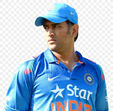
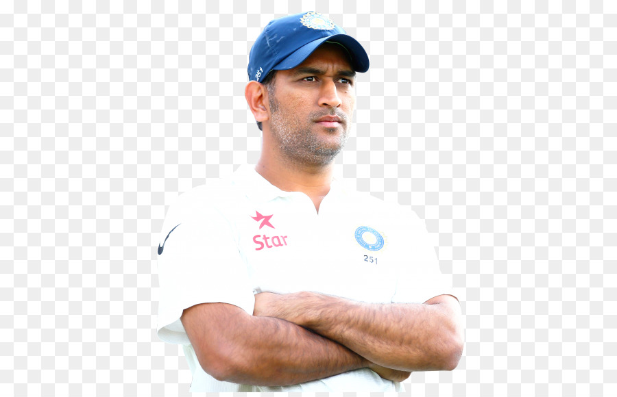
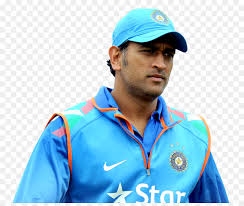
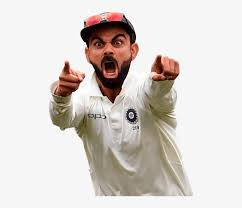
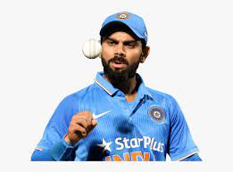
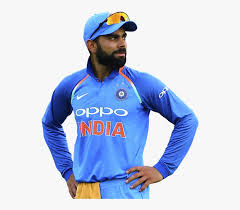

TESTIMONIALS

"Leadership is the capacity to translate vision into reality."
M S DHONI . . .

"Gut feeling is all about the experiences that you have had in your life.
Is about being in difficult scenarios, knowing what worked, what did not work,
and then taking a decision."
M S DHONI . . .

"Till the full stop does not come; the sentence does not complete."
M S DHONI . . .

"Whatever you want to do, do with full passion, and work really hard towards it. Don't look anywhere else."
VIRAT KOHLI . . .

"Irrespective of whether you have talent or not, one has to work hard."
VIRAT KOHLI . . .

"If you can stay positive in a negative situation, you win."
VIRAT KOHLI . . .